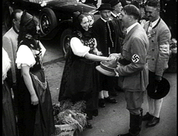

| Triumph
of the Will (SE)/A,B+ |
| Synapse/1935/120/FS 1.33/BW |
A perverse pool of acid bile rises uncontrollably from somewhere deep
inside you when you begin watching Triumph of the Will, Leni Riefenstahl's
documentary/propaganda portrait of the 1934 Nazi Party Convention in Nuremberg. Riefenstahl
is a brilliant image-maker and the compositions, one after another, are flattering to some of the
most odious historical characters of recent memory. But, if you can control that acid flow, one can
certainly marvel at the beauty and power delivered by the Third Reich's filmmaker of choice.
Watching Nazis
cavorting about in their uniforms, proudly brandishing their supposed superiority isn't exactly
easy to digest, but Riefenstahl does manipulate the image with amazing grace to pointed
effect. You do have to divorce yourself of those natural feelings of disgust about Hitler and his
cohorts to be fascinated by this important slice of history from an artistically slanted
perspective. Hitler was a really charismatic speaker, more so than I realized from the many
newsreels I have seen of him posturing before crowds like a sawed-off Demi-god. The one imposing
element of the convention is control. From Riefenstahl's pointed images to the masses of
participants, this is a show foreshadowing some of the most heinous acts in human history.
Riefenstahl's short 17 minute film, Day of Freedom, is also included in
the package. Mostly composed of fabulously composed images of Nazis showing off their battle
prowess, it's an effective compliment to Triumph of the Will.
|
 |
| Hitler meets locals in costume.
©Synapse |
Synapse delivers the goods on Triumph of the Will, spiritual warts and
all. The source material has been restored to odious grandeur. Riefenstahl's gliding, glowing
compositions are displayed with rare beauty. Contrast level are fine and element damage control
prevents dirt and scratches from disrupting material impact. The sound is clean, but rather
immaterial in this case. Grain is tightly controlled and image flashing is kept to a minimum. There
are some errant splices. Shadow detail is very good, though some black compression is evident
in the night sequences. Above all, mood is maintained. Removable English subtitles are available,
but often the image says more. Historian Dr. Anthony R. Santoro provides insights on an audio
commentary track, often falling into the trap of describing the images. |
|
|
|

Selections from the Feature Archive
include articles on Akira Kurosawa, Frank
Darabont, Blonde Bimbos, Hollywood Street Gangs, or Vietnam: The
Hollywood Pariah, and many more....
 From
The Adventures of Robin Hood to Casablanca, director Michael Curtiz made movies that delighted
audiences. Click on the image for Michael Curtiz:
Directed Passion. From
The Adventures of Robin Hood to Casablanca, director Michael Curtiz made movies that delighted
audiences. Click on the image for Michael Curtiz:
Directed Passion.

Mother Night/A-/A-
The eccentric style of Nick Nolte is perfect for the angst ridden
Howard W. Campbell, Jr., a hero or a villain.
 
ISF Monitor Calibrations in the
Tristate New York area. Lots of hardware info and frequent hardware peaks from video expert Kevin
Miller.They may be judgmental, but that's the point, isn't it. Lots of DVD reviews plus news and
more.
 Jim
Doolittle Jim
Doolittle
ISF Instructor. Premier calibrator and expert front projection system setup technician in the
Boston area.
 A love of movies drives
this small DVD production company, Synapse Films. Currently specializing in horror and cult films. Watch for new DVD releases of film
festival independents as Synapse branches out. A love of movies drives
this small DVD production company, Synapse Films. Currently specializing in horror and cult films. Watch for new DVD releases of film
festival independents as Synapse branches out.

Cyber Theater is an outstanding source for accurate video information. Check out their 16 x 9
format guide for a thorough understanding of DVD encoded that way.
 Have you visited Home Theater
Talk lately? One of the friendliest places on the Net for Home Theater and DVD discussion, you
can get help for installation problems or simply share your opinions with other Vidiots. Have you visited Home Theater
Talk lately? One of the friendliest places on the Net for Home Theater and DVD discussion, you
can get help for installation problems or simply share your opinions with other Vidiots.
|